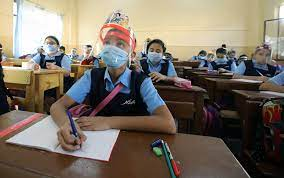
500+ Students Participate every year

Anokhi पहल is the non profit organisation run by the students of MNNIT Allahabad and is working to provide education
to the less fortunate. Antyodaya-the annual fest of anokhi पहल. We aim to create aunique platform for students who have
lot of potential, all they needof from different Government schools(where activities or events are not conducted for the sake
of students) of prayagraj participate and gain a unique experience and exposure while having fun along the way. The
various scientific, cultural and artistic competitions have been specifically designed to judge students based on their creative,
analytical and innovative ability. Every year Antyodaya is conducted on eve on Children’s Day within the college campus.
Antyodaya is conducted for an all-round learning experience filled with fun!
Anokhi पहल has successfully conducted 3 editions so far and November, 2020 will witness forth edition of Antyodaya.
Winners of anokhi पहल were awarded Certificate of achievement for
outstanding efforts to help protect and preserve the environment
(young innoverse challenge).
Some children are unable to find out that in which side (technical,cultural etc) they can do best,so
Antyodaya give them chance to identify their strength and increase
their confidence by awarding them certificates and medals.
Project DemonstrationIn this event, students will be making innovative model to solve daily life problems.This is a flagship event in which the problem statements have been framed to target the problems in daily life and creating an efficient way to solve by being creative, analysing and identifying the problem and finally coming up with an innovative solution.The event would have exciting prizes along with cash prize. |
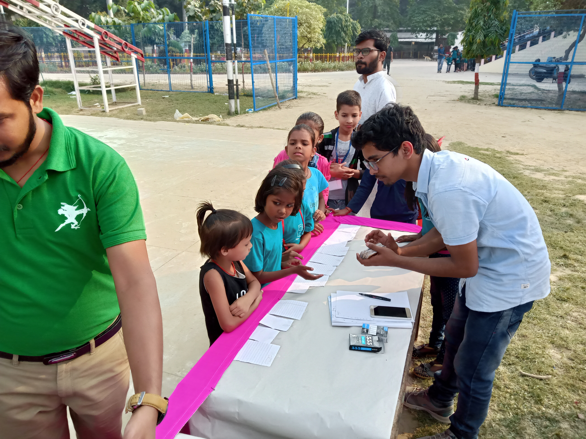 |
| 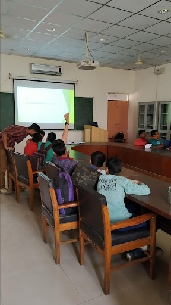 |
QuizQuiz is the only way to check the mental and spontaneous thinking abilities of a student. This quiz is to be based on basic science facts, aptitude and reasoning. The event is sectioned into two groups with 6th to 8th in junior group and 9th to 12th in senior. |
Young Innoverse ChallengeEvery participant of Antyodaya would be required to submit an innovative approach to the given problem statements that deal with daunting social problems. |
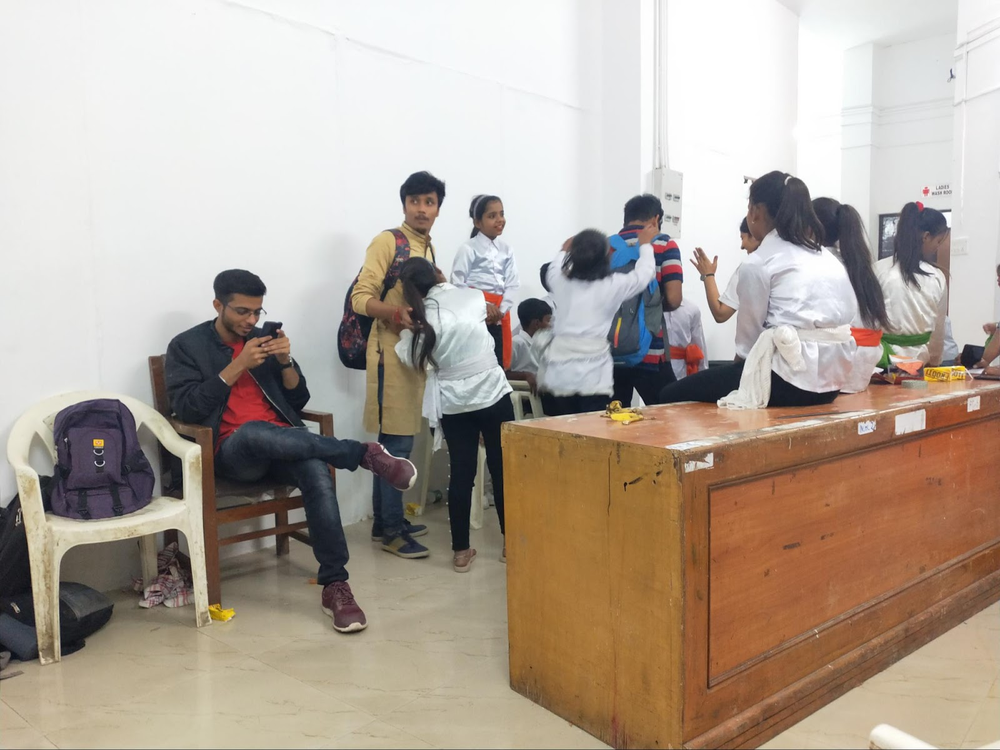 |
| 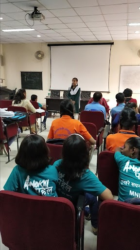 |
OrationThe art of delivering your views, thoughts and opinions is oration. It allows us to form connections, influence decisions, and motivate change. This event is scheduled to be conducted in both Hindi and English language. |
SingingExpressing your emotions through music is singing. It tests the combination of fluency, speed and of voice. Antyodaya team conducts mono/duet singing and give chance to children to show their talent through singing. |
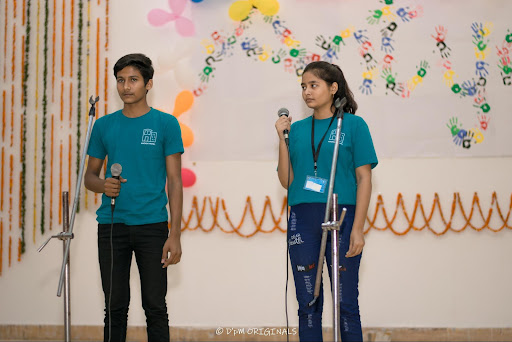 |
| 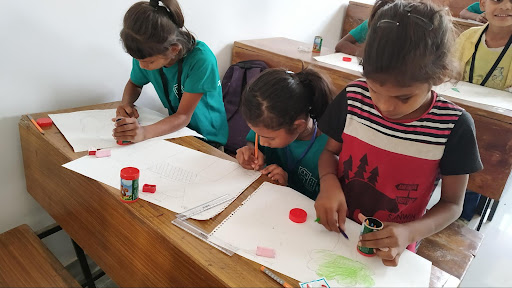 |
Poster MakingArt is nothing but the expression of human imagination, visualization and thought processing. Art is the only field where creativity comes out with shining results. |
Fancy Dress CompetitionFancy dress is one of the most exciting things for young ones. They love to dress apart and resemble their favourite animal, fruit or any cartoon character. |
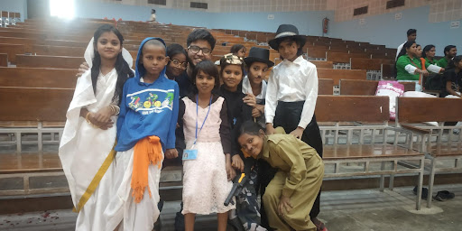 |
| 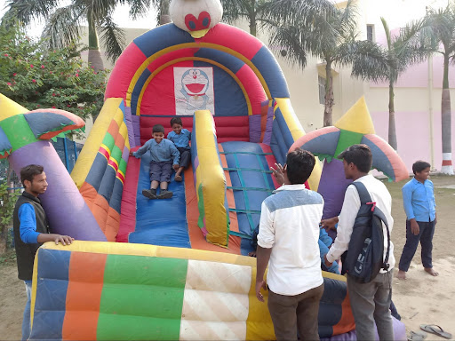 |
GamesA game is a system in which players engage in an artificial conflict, defined by rules, that results in a quantifiable outcome.A game is a form of art. |
Mono/Duet ActWe often do not completely understand all the emotions that are conveyed to us. Acting helps us live in those moments, it is thus the most powerful form to communicate and interact with the masses. |
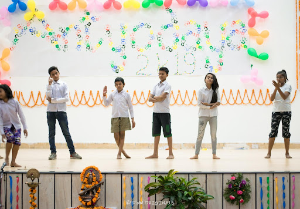 |
| 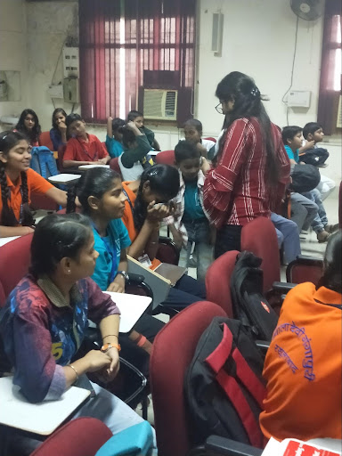 |
Essay WritingEssay writing is the best method to check how well a student can describe his thoughts with respect to any given topic. This is why essay writing competition is scheduled for both junior and senior group. The competition is distinctly conducted in two languages, i.e, English and Hindi. |
Sports Events (Race, Chess, slow cycling)Sports are as important as academics. Every student often foregoes physical fitness to build mental fortitude not realising that both often are as important in forming their brains |
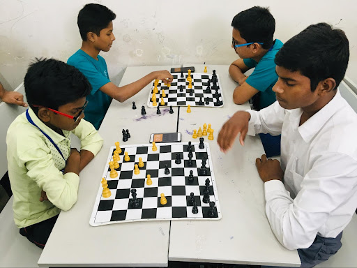 |
| 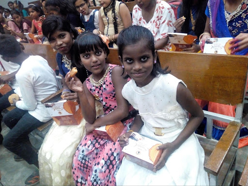 |
FOOD PACKET DISTRIBUTION
|